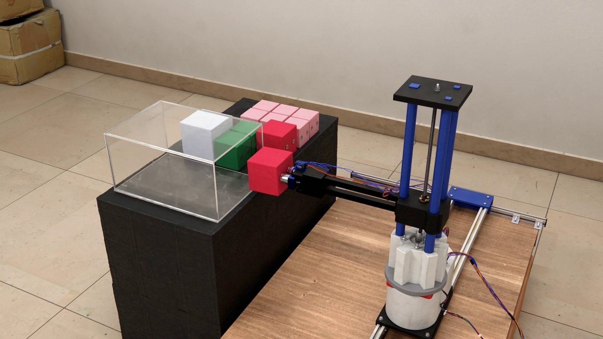
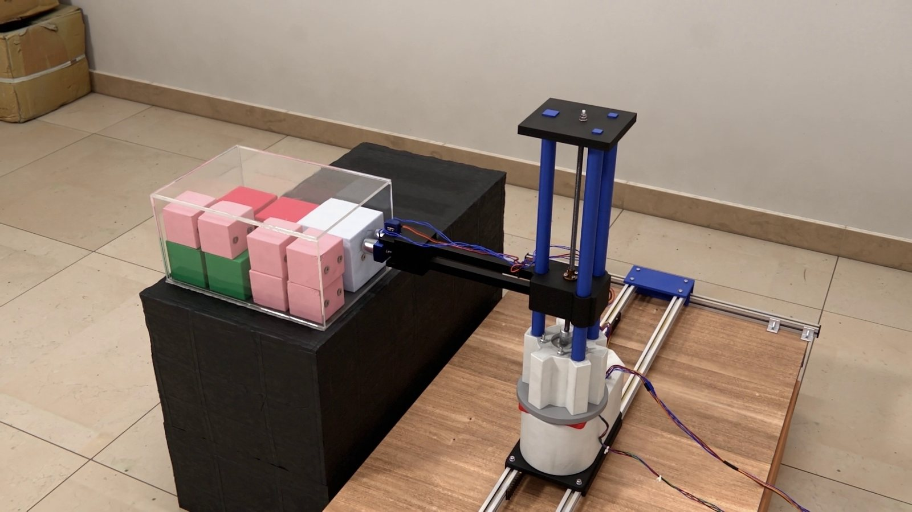

The idea
We trained a policy to plan the packing and built an arm to carry it out. Then we tried the same plan with real boxes.
1Background
Packing boxes of different sizes into a container so that little space is wasted is the 3D bin-packing problem. It has no fast exact solution, so warehouses rely on rules of thumb and on the experience of the people loading.
We wanted to test a learned packing plan with physical boxes, using an arm that could execute it.
2What we built
PackMax showed a loading plan as an animation. For Deep-Pack we wanted to see what happens when a machine carries out the plan. A box can fit in the final layout and still be hard to lower into place once the neighbouring boxes are in the container.
The arm
The arm has five degrees of freedom. A gantry of aluminium extrusions moves it in X and Y over a workspace of 1 m by 0.6 m, with timing belts and linear bearings. A rotary base turns the arm, and a lead screw lifts it through 0.2 m. The end effector is an electromagnet, and a servo rotates it so that it can hold boxes of different sizes. The payload is 200 g.
The container is a scaled model, 30 by 20 by 15 cm. Before fabrication we checked the structure with a static analysis in ANSYS.
| Static analysis | Value |
|---|---|
| Maximum stress | 0.87 MPa |
| Maximum deformation | 0.74 mm |
| Safety factor | above 15 |




The policy
The policy builds on GOPT, a published Transformer-based method for 3D bin packing trained with deep reinforcement learning. The container is represented as a height map: the height of the stack at each cell of the floor. Each box is encoded by its dimensions in two upright orientations, 0° and 90°.
A placement generator proposes candidate spaces for the next box, and the Transformer scores them against the box. Training uses Proximal Policy Optimization (PPO). The reward is the gain in space utilisation after each placement. The height map gives the policy a compact view of the stack, and the candidate filter lets it score only positions that can fit the next box.
Open-loop execution
The system runs open loop. The policy computes the complete plan first: the order of the boxes, and the orientation and position of each. A path planner turns the plan into pick-and-place moves, and the arm runs them in sequence without feedback from the container.
With a fixed plan we could compare where the boxes landed with where we intended to put them. A small error early in the run could take away the clearance needed for a later placement.
3Results
4What it needs next
The arm carries out the plan without looking. Small errors in the measured box sizes sometimes caused collisions, which we covered with buffer space. The next step is to measure the container as it fills and replan.